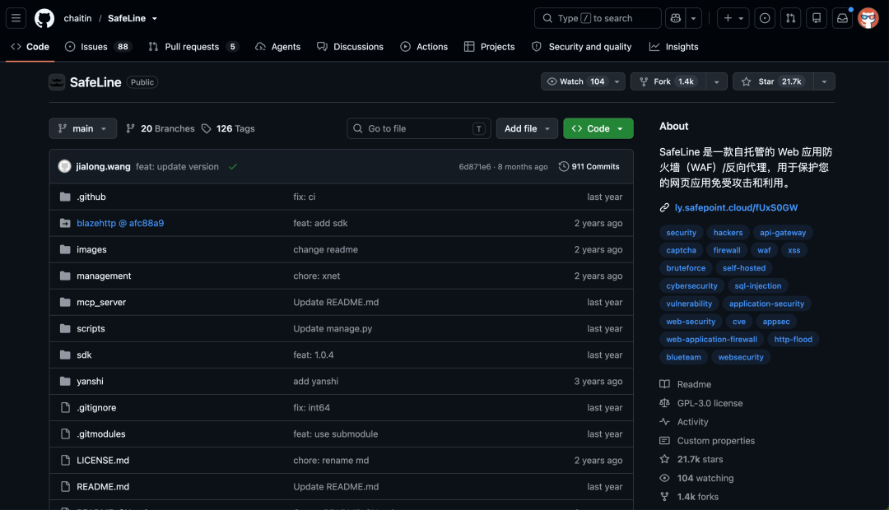
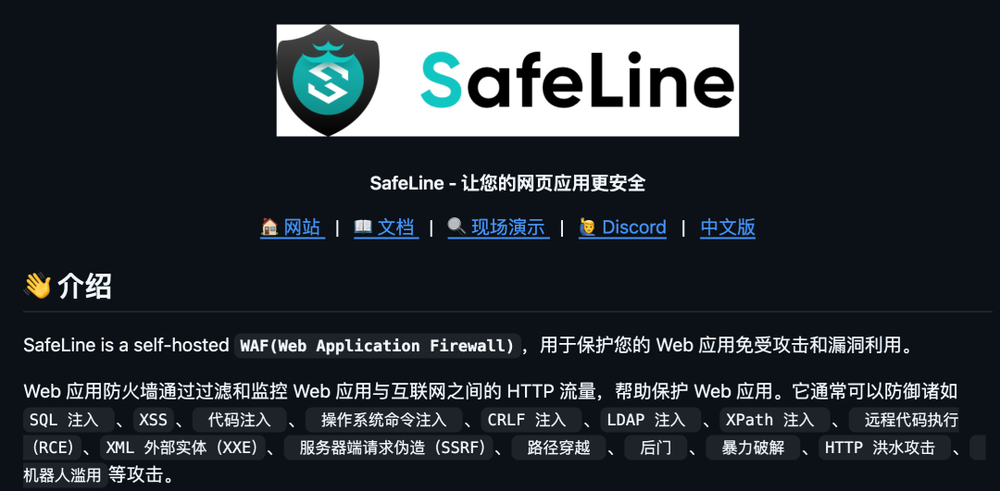
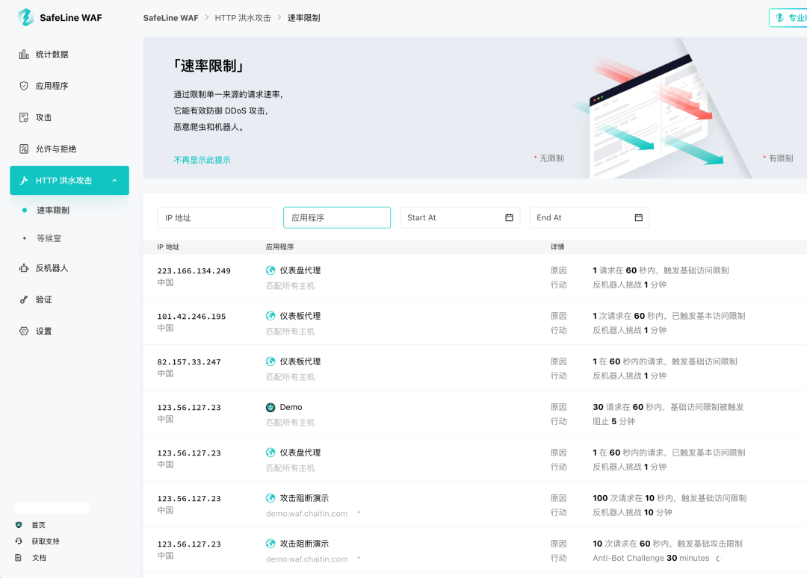
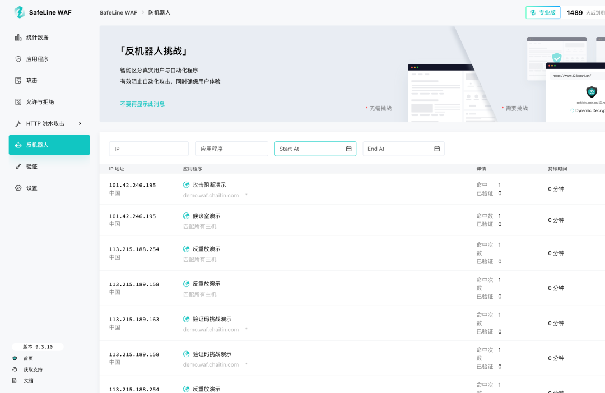
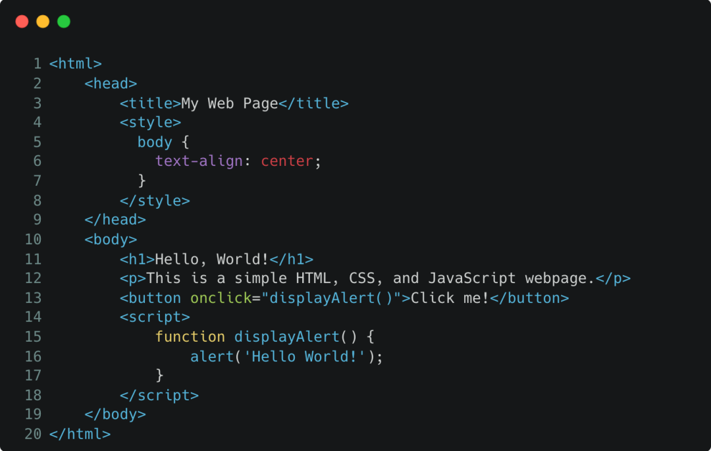
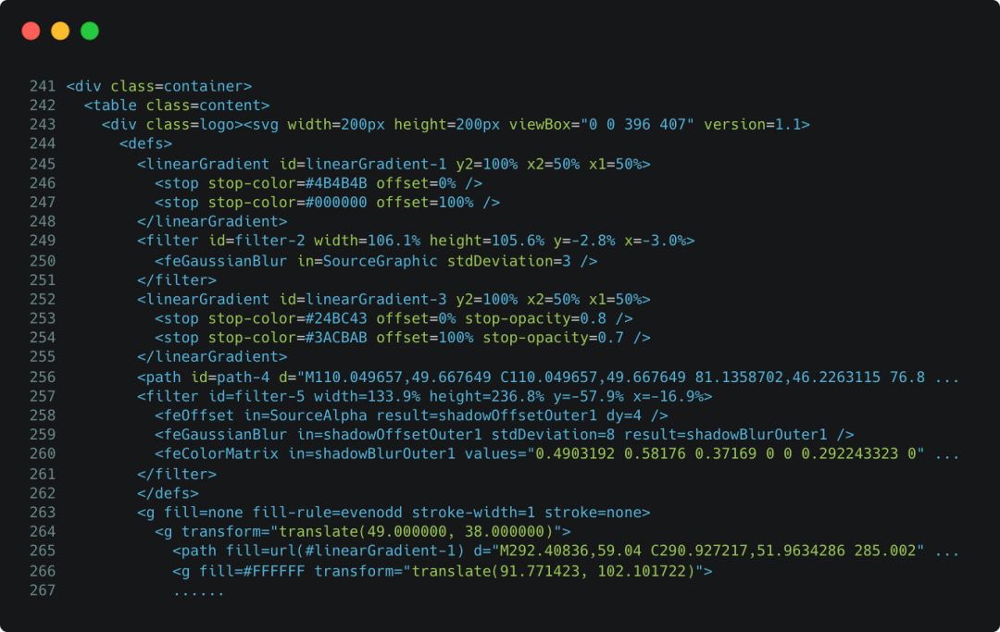
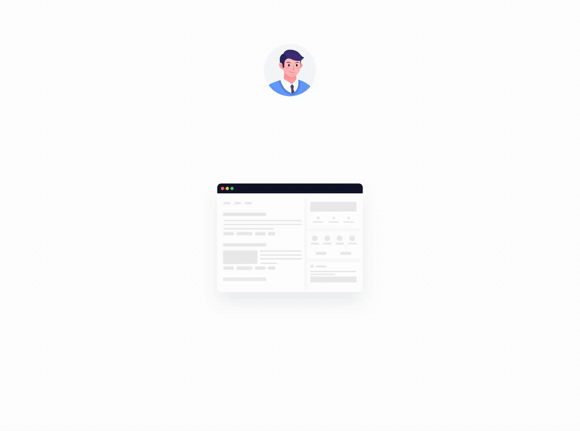
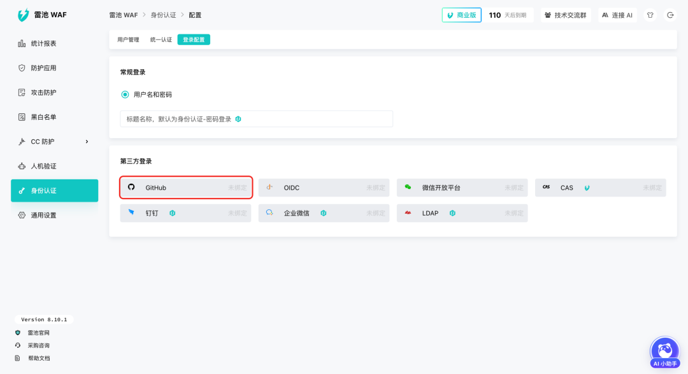

如果你有一台服务器暴露在公网，哪怕只是放了一个个人博客服务。
过不了多久，你大概率就会在日志里看到一堆奇怪请求。
还有一些访问频率高得离谱，感觉就是拿你的小站来压测了。
网站安全防护并不是大公司才需要考虑的事。
今天介绍的这个开源项目，叫 SafeLine，中文名是雷池。

它是一款可以自己部署的 WAF，也就是 Web 应用防火墙。
在 GitHub 上已经有 2.1 万 Star。
它把很多公网入口常用的防护能力，做成了普通开发者也能部署、能理解、能在控制台里配置的形态。
01
开源项目简介
SafeLine 是一个 WAF，同时也可以理解成放在业务前面的反向代理。
你的真实业务服务可以先藏在 SafeLine 后面。外部请求进来后，SafeLine 判断这个请求有没有风险，再决定是放行、拦截、限速，还是丢给人机验证。

它能覆盖的常见风险包括 SQL 注入、XSS、命令注入、SSRF、路径穿越、RCE、暴力破解、HTTP Flood、恶意爬虫、漏洞扫描等。
这类工具最适合几类人：独立开发者、自建服务玩家、中小团队的官网、安全和运维。
WAF 不能替你修业务漏洞。代码安全、权限设计、依赖升级、备份恢复，这些还得做。
但很多时候，有一层入口防护，和裸奔上公网，体验差别很大。
开始体验：https://rivers.chaitin.cn/register?rc=GHJ6BOWVUFI6PKDXH6XEJDD2BLB6WYPB项目地址：https://github.com/chaitin/SafeLine
02
真正好用的地方
现在攻击网站的手段，可能不仅仅是 SQL 注入、XSS 这种了。
现在很多公网服务遇到的麻烦，更多是自动化流量、异常访问频率、爬虫抓取、内部页面误暴露这种。
CC 防护
一个平时没多少访问量的小站，突然某个接口被疯狂请求。
CC 防护可以在入口层做频率限制。
某个来源访问太快、请求节奏明显异常，就可以先限制住他。

它还有等候室能力，适合流量高峰或疑似 CC 攻击。
访问会按照策略排队、等待、放行，后端不用一瞬间接住所有请求。
对没有复杂弹性扩容的小团队来说，入口处能先稳住访问节奏，就已经解决了很大一部分压力。
Bot 防护
Bot 流量经常看起来很正常。
它背后可能是爬虫、或者批量注册、撞库、刷接口的脚本。
SafeLine 的人机验证会根据客户端环境做综合判断。
它会看源 IP 是否有过恶意行为、客户端是不是真实浏览器、是否存在监控或调试行为、键盘鼠标行为是否符合人类习惯等。

对真人用户，它会尽量放行。对自动化程序来说，这一关会明显增加成本。
动态防护
很多爬虫和自动化攻击工具喜欢稳定结构。
页面结构稳定，接口路径稳定，参数规律稳定，它就能写一套规则反复跑。
SafeLine 的动态防护可以对 HTML 和 JS 做动态保护。开启后，每次访问时页面里的 HTML 和 JS 代码会被动态处理。
合法用户：

恶意用户：

SafeLine 的 Bot 防护里还包含请求防重放能力，用来降低请求被捕获以后反复利用的风险。它不会替代业务侧的权限校验，但可以在入口层先加一道限制。
身份认证
开发一个网站，可能会有测试环境、临时后台、内部工具啥的。
这些肯定是不能让外部访问的。
但是可能因为调试、联调、赶进度，最后就挂在公网了。
SafeLine 的身份认证能力，可以在应用前面加一层访问验证。访问者先通过认证，才能继续进入真实业务页面。

这对内部后台、测试系统、临时页面很有用。
有些系统本身登录做得比较简单，有些页面甚至只是临时开放。入口处先加一层认证，至少能把大无关访问挡掉。
雷池也有统一认证能力，包括钉钉、企业微信、GItHub 等。

03
如何使用
SafeLine 的部署方式对运维同学不算陌生，主要面向 Linux 和 Docker 环境。
官方文档里提供了自动安装、手动安装、离线安装等方式。对个人开发者来说，自动安装是最省事的入口。
中文社区版安装命令可以参考官方文档：
bash -c "$(curl -fsSLk https://waf-ce.chaitin.cn/release/latest/manager.sh)"如果你使用国际版，也可以看英文文档的部署入口。
https://docs.waf.chaitin.com/安装完成以后，大致流程是这样：
第一步，进入管理控制台，初始化账号。
第二步，添加需要保护的应用，比如你的博客、后台、API 服务。
第三步，把域名或反向代理入口指向 SafeLine。
第四步，根据应用类型开启对应防护，比如 Web 攻击防护、CC 防护、Bot 防护、身份认证、访问控制。
第五步，看攻击事件、访问日志和统计报表，再慢慢调策略。
这个流程的体验，和传统手写 Nginx 规则不太一样。
它更像是把公网入口做成一个可视化安全控制台。
你可以看到哪些请求被拦、为什么被拦、哪个站点更容易被扫，再决定要不要调高策略。
使用我的专属链接下单有折扣哦：https://rivers.chaitin.cn/register?rc=GHJ6BOWVUFI6PKDXH6XEJDD2BLB6WYPB
欢迎加入官方群讨论：
04
点击下方卡片，关注逛逛 GitHub
这个公众号历史发布过很多有趣的开源项目，如果你懒得翻文章一个个找，你直接关注微信公众号：逛逛 GitHub ，后台对话聊天就行了：